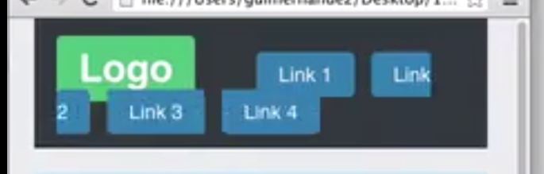
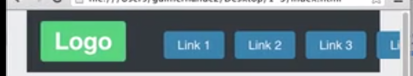

The 5 types of layouts are as follows:
Lets cover these in order of our list.
We can change the default display mode of any element on our page by using the css display property. There are 3 useful display types for css layout purposes.
.class-name { display: inline; }
.class-name { display: inline-block; }
.class-name { display: table; }
The display inline property sets any element to behave exactly as an inline element. Such as a link or the words in a paragraph.
** Inline elements cannot have a width or top and bottom margin applied to them. **
By default, list items display as block level elements.
But watch but happens when we apply the display:inline; rule. and reset the list style type
** Just as there is white space between the words of a paragraph, there is white spice between elements you set to display as inline. **
To remove the white space you can remove all spacing between elements in your html markup, or the preferred way, which is to apply a negative margin-right of about 4 px. Depending on the font size.
.list {margin-right:-4px; }And we get:
One last issue with the display inline method:
** When you resize the browser window, the elements displayed as inline will wrap like words of a paragraph. **
We can stop that from happening by applying a whitespace property with a value of nowrap.
This still is not perfect because the elements start to esacpe their parents as seen in the following image.
It's very important to understand how display:inline works, but due to the several layout bugs we've mentioned here, display: inline; will rarely be used for entire page layouts, however, it could be useful in some situations.
A similiar but more useful display mode for layout purposes is display:inline-block;
This display mode is very simliar to display:inline; but with a few differences, which allow it to be more flexible, thus providing more usefullness.
** display:inline-block allows you to set a width and top and bottom margins **
To fix the wrapping of elements that are displayed as inline, you can switch them to inline-block and instead of every element wrapping like words in a paragraph, the inline-block elements stick together and wrap as one down to the next line.
** The same whitespace issue with inline elements also occur with inline-block elements. **
** Display values are not inherited by child elements **
If we ever need to make a link's hover target expand to fill the entire area of an inline-block element, here is how we do that.
Here we have a list displayed as inline-block with a few styles added to it. Notice the whitespace.
When you hover over the links, the hover target area is very small. We want the entire area that is blue to be clickable. For that result, we need to remove the padding from the actual list items, apply it to the links themselves, and turn the anchor tags to block level elements.
.inline-block {
display: inline-block;
background-color: rgb(45, 59, 255);
border-radius: 5px;
a {
color: white;
text-decoration: none;
font-family: proxreg;
display: block;
padding: 10px;
}
}** What's most useful about the display:table;
property is that it allows us to easily vertically align children to the middle of their parents. **